6 Visualization Options
In this chapter, we explore various visualization options available in the fdid package.
6.1 Raw means
-
ci = FALSEremoves the 95% confidence intervals.
plot(fdid_results_ols1, type = "raw", ci = FALSE)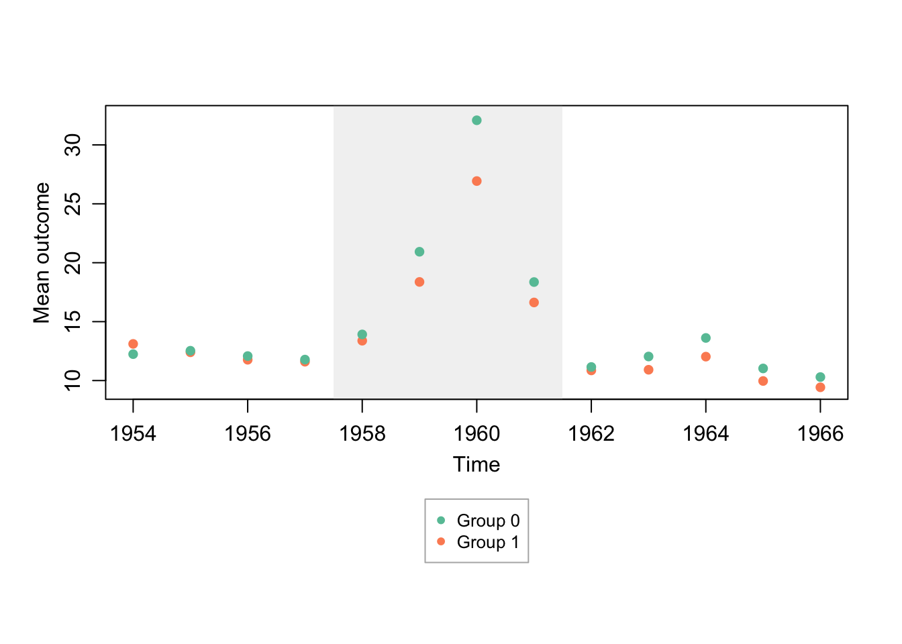
-
connected = TRUEconnects points with lines (default:FALSE).
plot(fdid_results_ols1, type = "raw", connected = TRUE)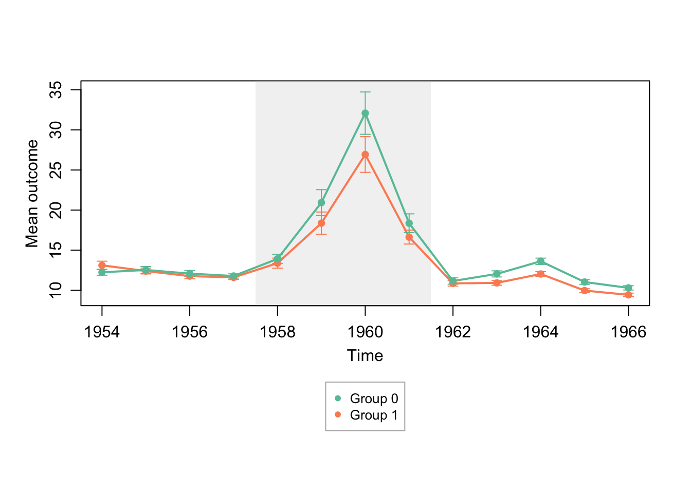
-
group_labelsrenames the two groups.
plot(fdid_results_ols1, type = "raw", connected = TRUE,
group_labels = c("Low Social Capital", "High Social Capital"))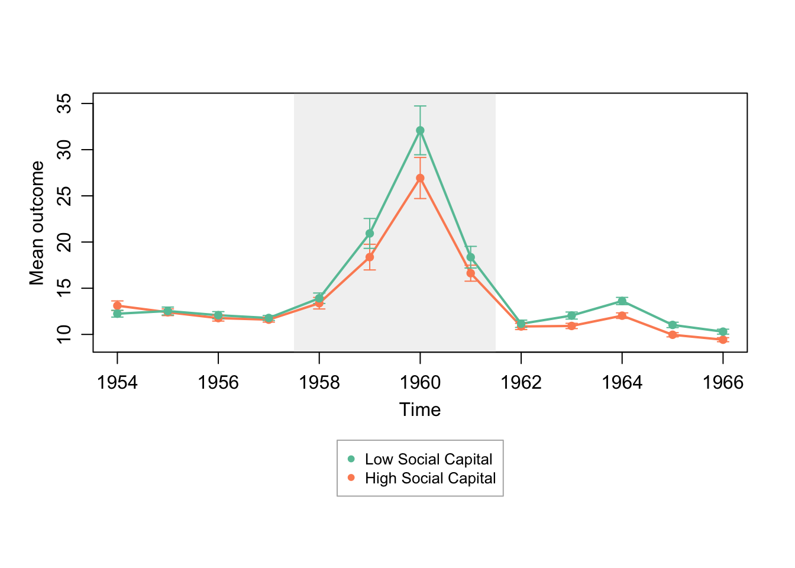
-
palettechooses an RColorBrewer palette (default: “Set2”).
plot(fdid_results_ols1, type = "raw", connected = TRUE,
group_labels = c("Low Social Capital", "High Social Capital"), palette = "Set1")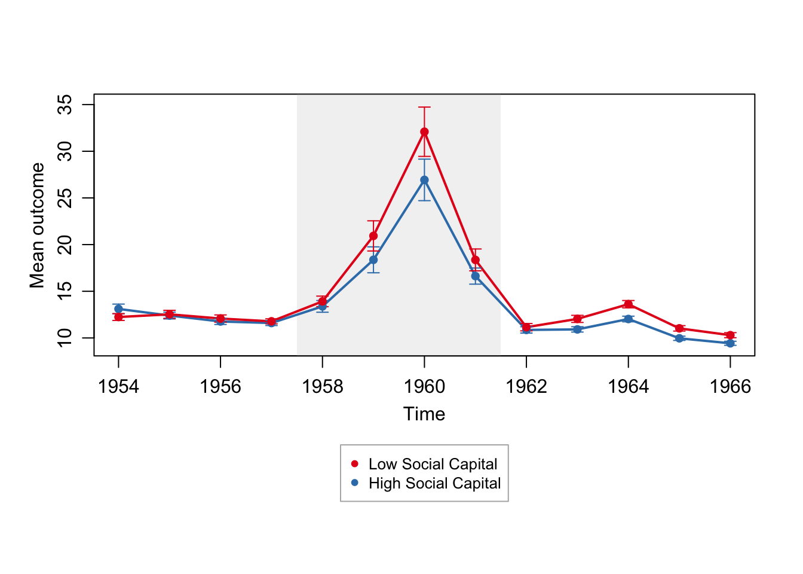
-
shade_periodscontrols the position of shaded region. Default isx$tr_period, i.e. the event window.- By setting
shade_periods = c(1954, 1957), the pre-event periods can be set shaded. - By setting
shade_periods = NULL, the user can also remove the shaded region.
- By setting
plot(fdid_results_ols1, type = "raw", connected = TRUE,
group_labels = c("Low Social Capital", "High Social Capital"),
shade_periods = c(1954, 1957))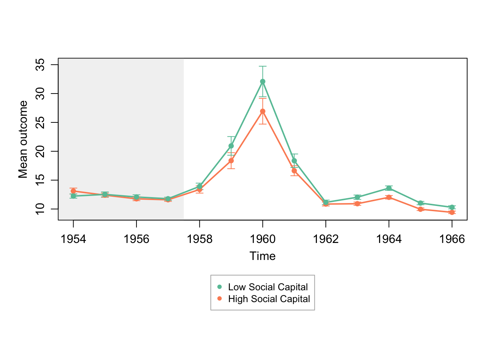
plot(fdid_results_ols1, type = "raw", connected = TRUE,
group_labels = c("Low Social Capital", "High Social Capital"),
shade_periods = NULL)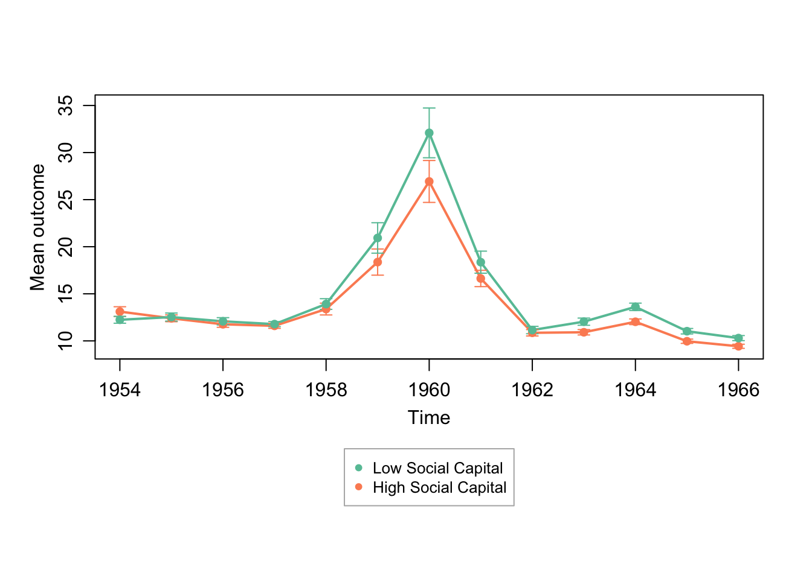
-
alpha_shadecontrols the transparency of the shaded region.
plot(fdid_results_ols1, type = "raw", connected = TRUE,
group_labels = c("Low Social Capital", "High Social Capital"),
alpha_shade = 0.6)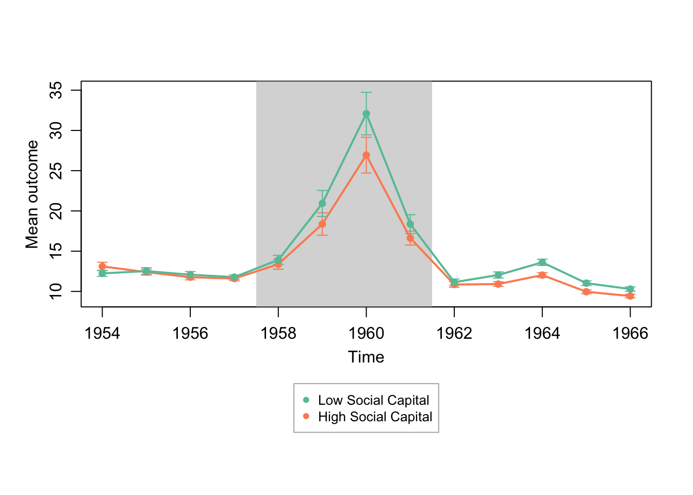
- The user can also set
ylim,xlab,ylab, andmain(currently, xlim is not supported).
6.2 Dynamic estimates
-
ci = FALSEremoves the 95% confidence intervals.
plot(fdid_results_ols1, type = "dynamic", ci = FALSE)
-
connected = TRUEconnects points with lines (default:FALSE).
plot(fdid_results_ols1, type = "dynamic", connected = TRUE)
-
shade_periods,alpha_shade,ylim,xlab,ylab, andmaincustomize the plot as above.
plot(fdid_results_ols1, type = "dynamic", connected = TRUE,
shade_periods = c(1954, 1957),
alpha_shade = 0.8, ylim = c(-10, 4),
ylab = "Estimates", xlab = "Year",
main = "Effect Modification of High Social Capital"
)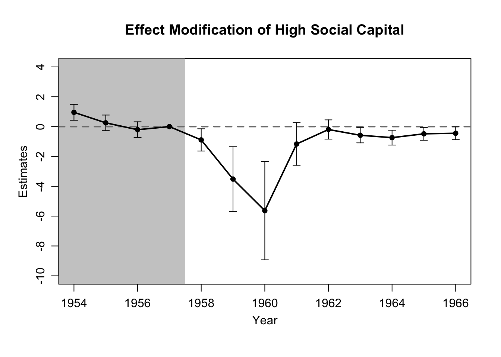
-
xlimzooms into a subset of years.
6.3 Overlap test
The user can adjust palette, ylim, xlab, and main:
6.4 Continuous-G curves
For method = "kernel" and method = "dml_flex", type = "curve" plots the event-period curve over the evaluation grid for \(G\).
The evaluation grid is part of estimation. If eval_g is supplied, kernel and dml_flex estimate curve values at exactly those grid points; if it is left as NULL, the package builds its default grid. The curve plot displays the stored eval_g rows and does not estimate additional points while plotting.
Use the curve argument to choose the estimand. The only method-specific default is curve = "auto": kernel plots default to the derivative curve, while dml_flex plots default to the level curve. Explicitly setting curve = "level" or curve = "derivative" makes the visual comparison transparent.
| Method | Level curve | Derivative curve |
|---|---|---|
"kernel" |
curve = "level" |
curve = "derivative" |
"dml_flex" |
curve = "level" |
curve = "derivative" |
method = "dml_incremental" is scalar; it reports the observed-population average derivative through summary() rather than type = "curve".
For numeric reporting from these stored curves, use fdid_contrast() for level comparisons and fdid_derivative() for fixed-\(g\) derivative values.
The main continuous-G plot controls are:
| Argument | Options | What it controls |
|---|---|---|
curve |
"auto", "level", "derivative", "both"
|
which stored curve is drawn |
interval |
"auto", "pointwise", "uniform", "both", "none"
|
pointwise intervals, simultaneous bands, both, or neither |
show.uniform.CI |
TRUE, FALSE
|
whether stored simultaneous bands are eligible to draw |
Xdistr |
"histogram", "density", "rug", "none"
|
observed support display for continuous G
|
support.panel |
"embedded", "separate"
|
whether support is drawn inside the curve panel or below it |
show.eval_g |
TRUE, FALSE
|
ticks for the stored evaluation grid |
diff.values, contrast.values
|
numeric vector | vertical reference lines at selected G values |
line.color, line.size, ci.color, ci.alpha, band.color, band.lty, hist.color, density.color, support.alpha
|
graphics values | base-graphics style controls |
xlim, ylim, xlab, ylab, main
|
graphics values | axis limits and labels |
For fixed-reference contrast coefficient plots, use type = "contrast". The main additional controls are:
| Argument | Options | What it controls |
|---|---|---|
ref.g |
numeric value, "median", "mean", "min", "max", "first"
|
reference level \(g_{\mathrm{ref}}\); default is "median" for level mode and the first quantile target for quantile mode |
include.ref |
TRUE, FALSE
|
whether to draw the algebraic zero reference row |
target.type |
"level", "quantile"
|
whether target.g gives absolute G levels or quantile targets |
target.g |
numeric vector, integer count, "q5", or "5" shorthand |
target levels, or quantile request when target.type = "quantile"
|
contrast.values |
numeric vector | alias for level targets when type = "contrast"; cannot be combined with target.g
|
n.contrast, max.contrast
|
positive integers | automatic displayed row count and cap, including the reference row when include.ref = TRUE
|
quantile.source |
"support", "eval_g"
|
whether quantile targets use observed G support within the fitted range or the fitted grid itself |
inference |
"auto", "replicate", "vcov", "band", "pointwise"
|
rule passed to fdid_contrast() for each displayed coefficient |
interpolate |
"linear", "none"
|
whether off-grid ref.g or target values are linearly interpolated |
ci |
TRUE, FALSE
|
whether coefficient CI bars are drawn when available |
If kernel and DML plots appear to have different lower panels, check Xdistr, support.panel, and curve. The support display is not estimator specific: "histogram" draws many narrow bars, "density" draws a smoothed filled density, "rug" draws ticks, and "none" suppresses support entirely. When curve = "both", support is embedded in each panel even if support.panel = "separate" is requested, so the two curve panels remain aligned.
plot(fdid_results_kernel_curve, type = "curve", curve = "derivative",
main = "Kernel Derivative Curve")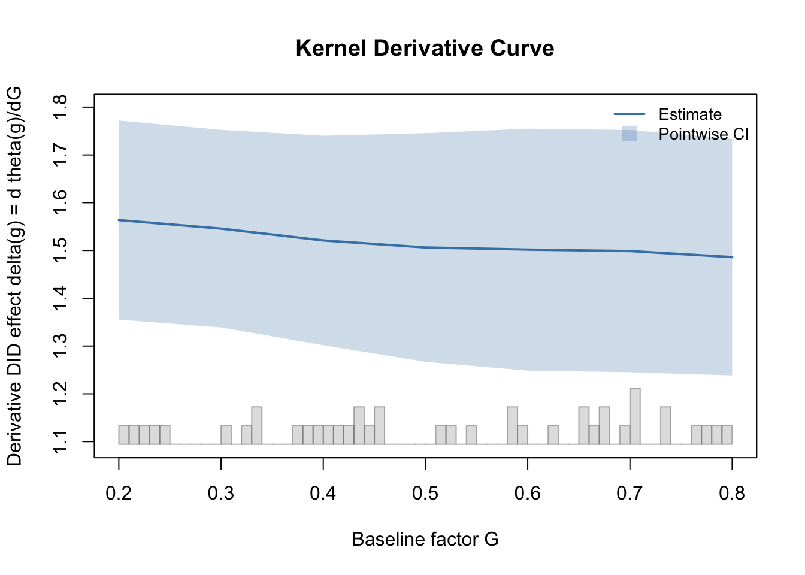
plot(fdid_results_kernel_curve, type = "curve", curve = "level",
main = "Kernel Level Curve")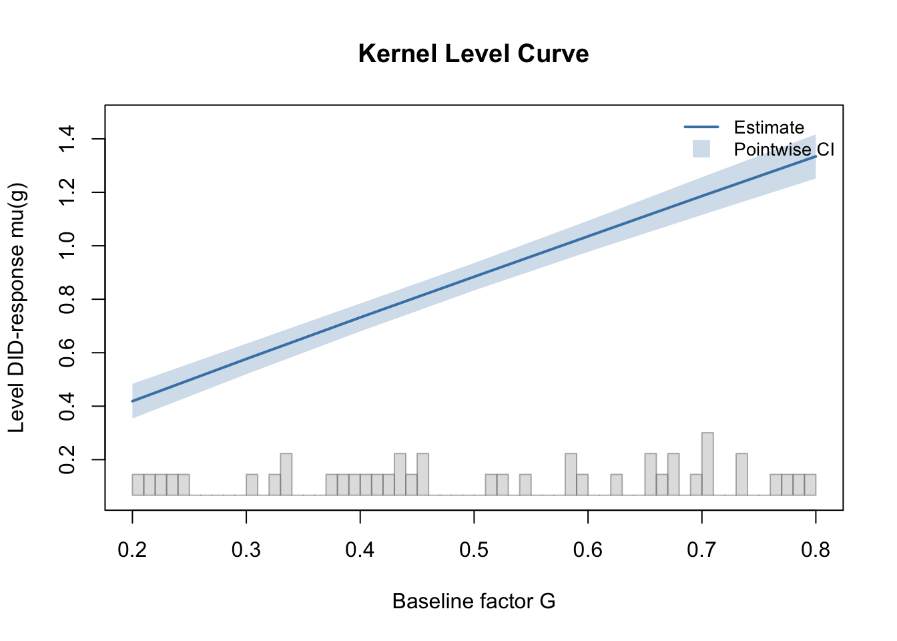
plot(fdid_results_flex_curve, type = "curve", curve = "level",
main = "DML Flexible Dose-Response Curve")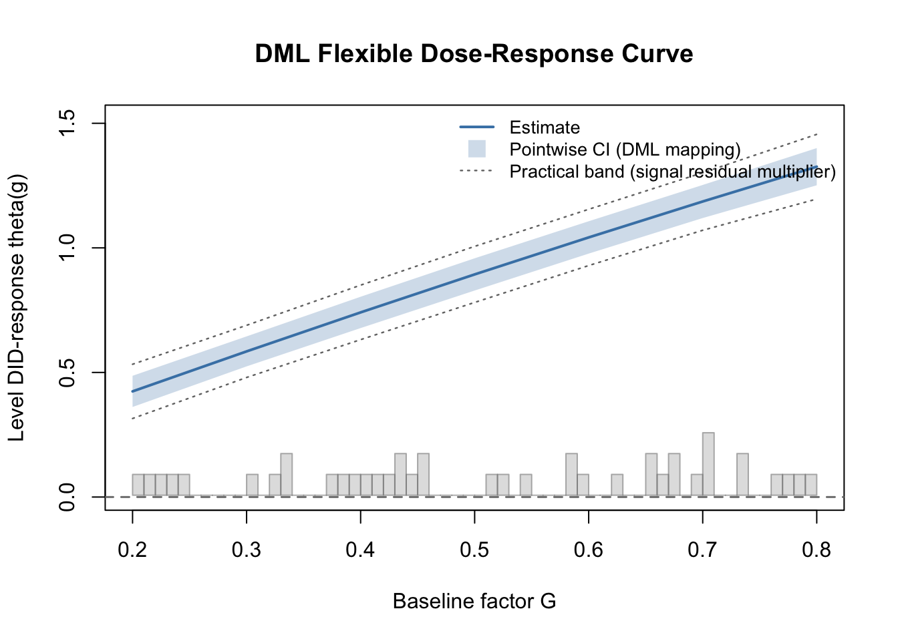
plot(fdid_results_flex_curve, type = "curve", curve = "derivative",
main = "DML Flexible Derivative Curve")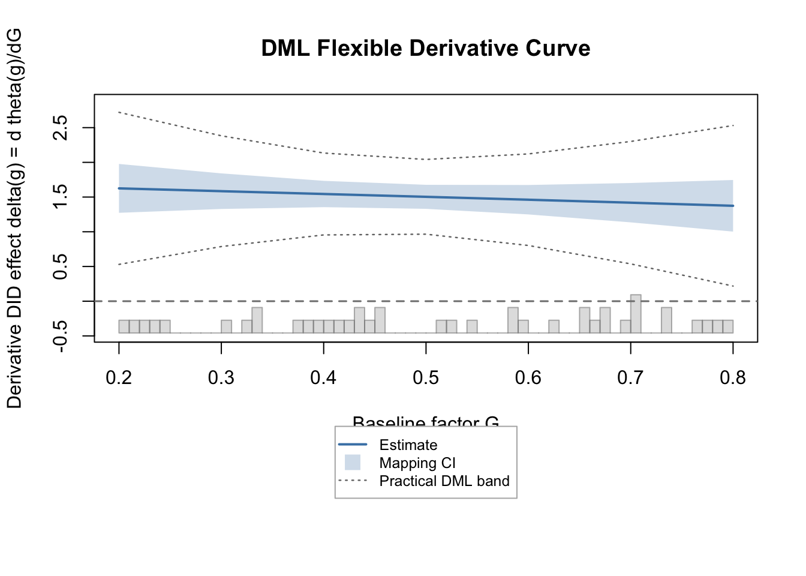
summary(fdid_results_incremental_scalar)
#>
#> Factorial Difference-in-Differences (FDID) Summary
#> ========================================================================
#> Method: dml_incremental
#> Variance Type: robust
#> Reference Period: 2
#> Pre-Event Period: 1, 2
#> Event Period: 3, 4
#> DML Target: observed_population_average_derivative
#> DML Inference: analytical_score
#> ========================================================================
#>
#> Aggregate Estimates
#> ------------------------------------------------------------------------
#> Estimate Std.Error 95% CI
#> ------------------------------------------------------------------------
#> Pre-Event 0.0500 0.0863 [-0.1191, 0.2190]
#> Event 1.4562 0.0588 [1.3408, 1.5715]
#> ------------------------------------------------------------------------
#>
#> Dynamic Estimates
#> ------------------------------------------------------------------------
#> Estimate Std.Error 95% CI
#> ------------------------------------------------------------------------
#> 1 0.0351 0.0730 [-0.1079, 0.1781]
#> 2 0.0000 0.0000 [0.0000, 0.0000]
#> ....................................................................
#> 3 1.0515 0.0979 [0.8596, 1.2433]
#> 4 2.0394 0.0748 [1.8928, 2.1861]
#> ------------------------------------------------------------------------
#>
#> DML Incremental Signal
#> ------------------------------------------------------------------------
#> Target: observed-population average derivative E[partial_g mu(G, X)]
#> Learner: linear | K folds: 3 | S splits: 1
#> Density: residual_kde
#> (Scalar estimate uses the cross-fitted orthogonal average-derivative signal)
#> ------------------------------------------------------------------------
#>
#> DML Diagnostics
#> ------------------------------------------------------------------------
#> Learner: linear
#> Density method: residual_kde
#> Complete observations: 60
#> Min s_hat(G|X): 0.35493 | share < 0.01: 0.000
#> Signal quantiles: p05=0.7408, p50=1.4847, p95=2.0647
#> partial_g mu quantiles: p05=1.4577, p50=1.5480, p95=1.5761
#> partial_g log s quantiles: p05=-4.5584, p50=0.0188, p95=6.2984
#> Residual-correction quantiles: p05=-0.7169, p50=-0.0113, p95=0.4901
#> ------------------------------------------------------------------------6.4.1 Curve, interval, and support display
curve = "both" draws level and derivative curves from the same fitted object. This is useful when checking whether a visually smooth level curve implies a plausible derivative curve.
plot(fdid_results_kernel_curve, type = "curve", curve = "both",
Xdistr = "density", main = "Kernel Level and Derivative")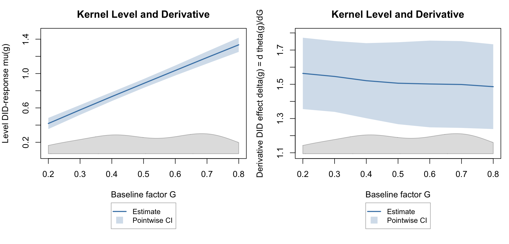
The interval argument chooses which uncertainty layer is drawn. For kernel curves, robust fits provide analytical pointwise normal intervals. Kernel bootstrap fits additionally store bootstrap percentile intervals and finite-grid quantile-envelope bands. For dml_flex, the label printed in the legend tells whether the band is a practical signal-residual multiplier band or, for signal_map = "blp_spline", a Gaussian max-\(t\) BLP-spline covariance band.
old_par <- par(mfrow = c(1, 2))
plot(fdid_results_kernel_boot_curve, type = "curve", curve = "level",
interval = "pointwise", Xdistr = "none",
main = "Pointwise interval")
plot(fdid_results_kernel_boot_curve, type = "curve", curve = "level",
interval = "both", Xdistr = "none",
main = "Pointwise plus uniform band")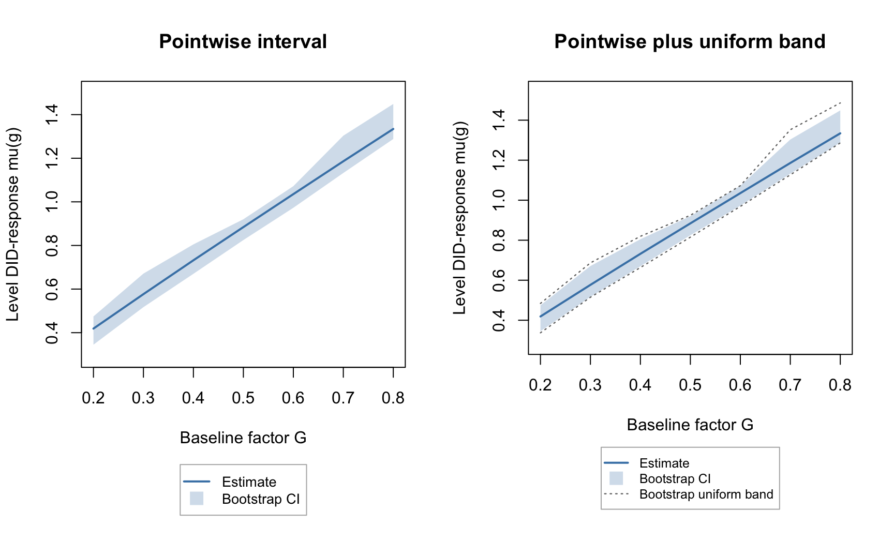
par(old_par)The observed-support display can be made compact or more diagnostic depending on the purpose of the figure.
old_par <- par(mfrow = c(2, 2))
plot(fdid_results_kernel_curve, type = "curve", curve = "level",
Xdistr = "histogram", support.panel = "embedded",
main = "Xdistr = histogram")
plot(fdid_results_kernel_curve, type = "curve", curve = "level",
Xdistr = "density", support.panel = "embedded",
main = "Xdistr = density")
plot(fdid_results_kernel_curve, type = "curve", curve = "level",
Xdistr = "rug", support.panel = "embedded",
main = "Xdistr = rug")
plot(fdid_results_kernel_curve, type = "curve", curve = "level",
Xdistr = "none", support.panel = "embedded",
main = "Xdistr = none")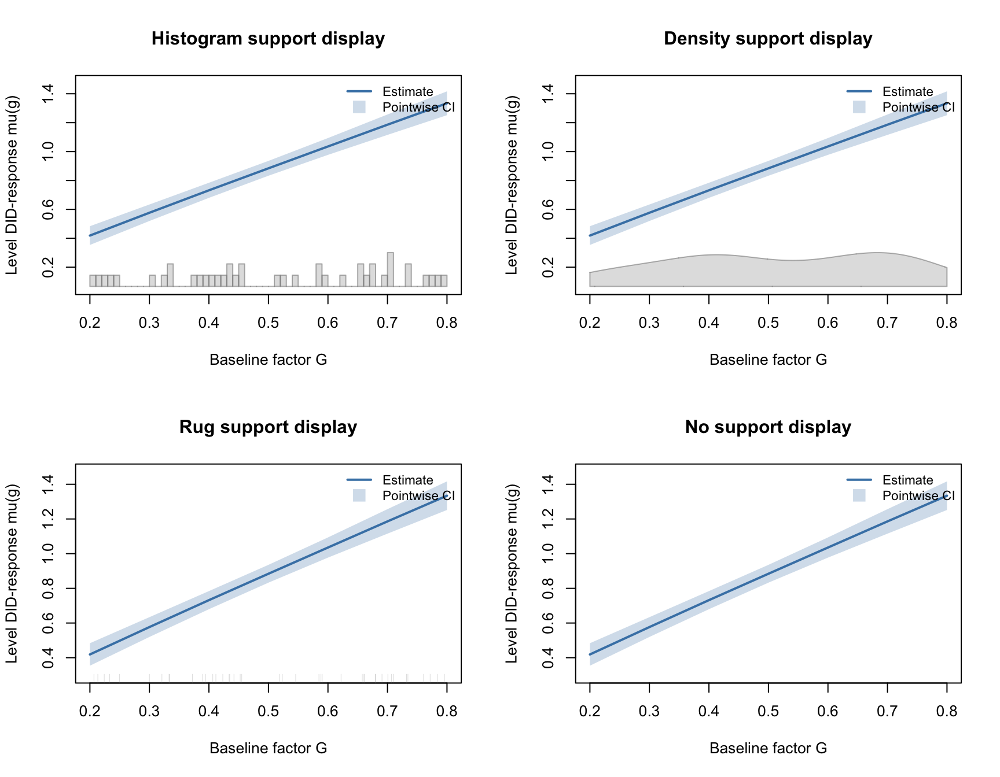
par(old_par)When the support layer competes visually with the curve, move it to a separate lower panel.
plot(fdid_results_flex_curve, type = "curve", curve = "level",
Xdistr = "density", support.panel = "separate", show.eval_g = TRUE,
main = "DML Curve With Separate Support Panel")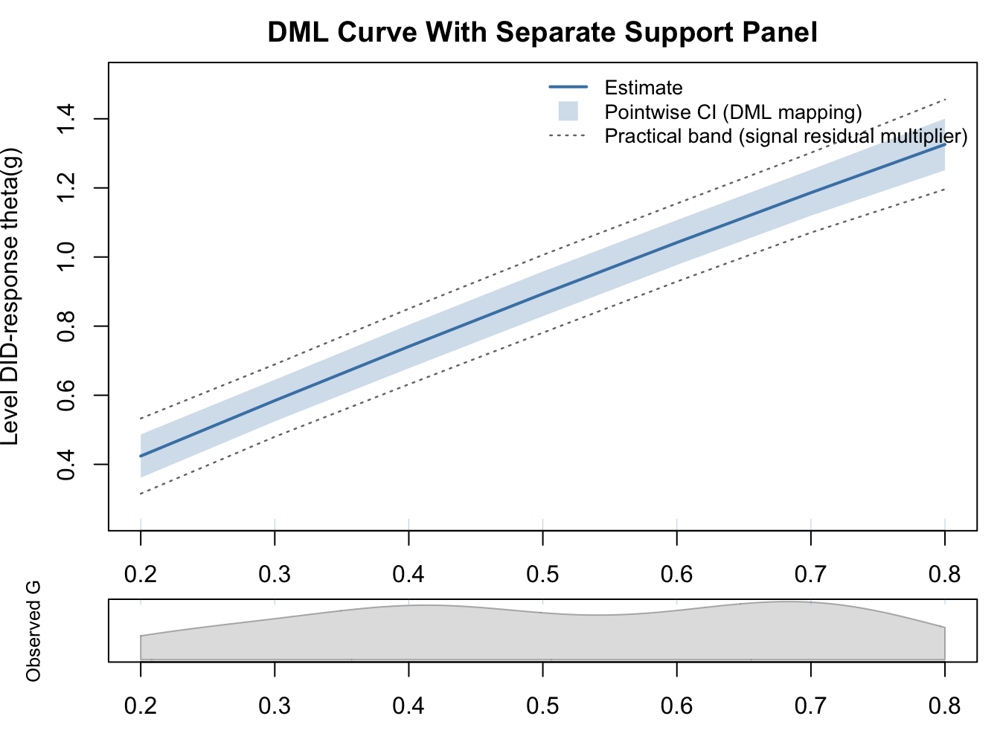
Use diff.values or contrast.values to mark substantively important values of G. These arguments draw reference lines only; the numeric contrast should still be reported with fdid_contrast().
plot(fdid_results_flex_curve, type = "curve", curve = "level",
Xdistr = "rug",
contrast.values = c(0.3, 0.7),
main = "Marked Contrast Values")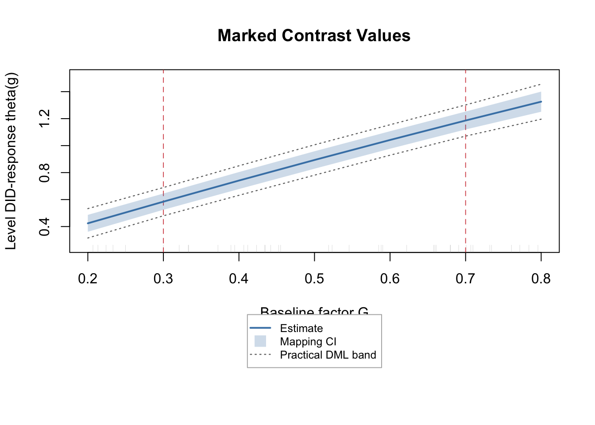
fdid_contrast(fdid_results_flex_curve, g0 = 0.3, g1 = 0.7)6.4.2 Fixed-reference contrast coefficient plot
A fixed-reference contrast coefficient plot fixes one reference value \(g_{\mathrm{ref}}\) and displays selected target contrasts, \(\theta(g) - \theta(g_{\mathrm{ref}})\) or \(\mu(g) - \mu(g_{\mathrm{ref}})\). Use type = "contrast" for the built-in coefficient-style plot. The plot calls fdid_contrast() for each displayed target value, so its intervals follow the same inference rule as the reporting helper: stored curve covariance when available, then replicate curves, then stored bands, then a labeled pointwise fallback. The reference row is an algebraic zero anchor, not a separately estimated contrast. Set ci = FALSE to show only point estimates.
plot(fdid_results_flex_curve, type = "contrast",
target.type = "quantile",
target.g = 5,
main = "Five Quantile-Selected Contrasts")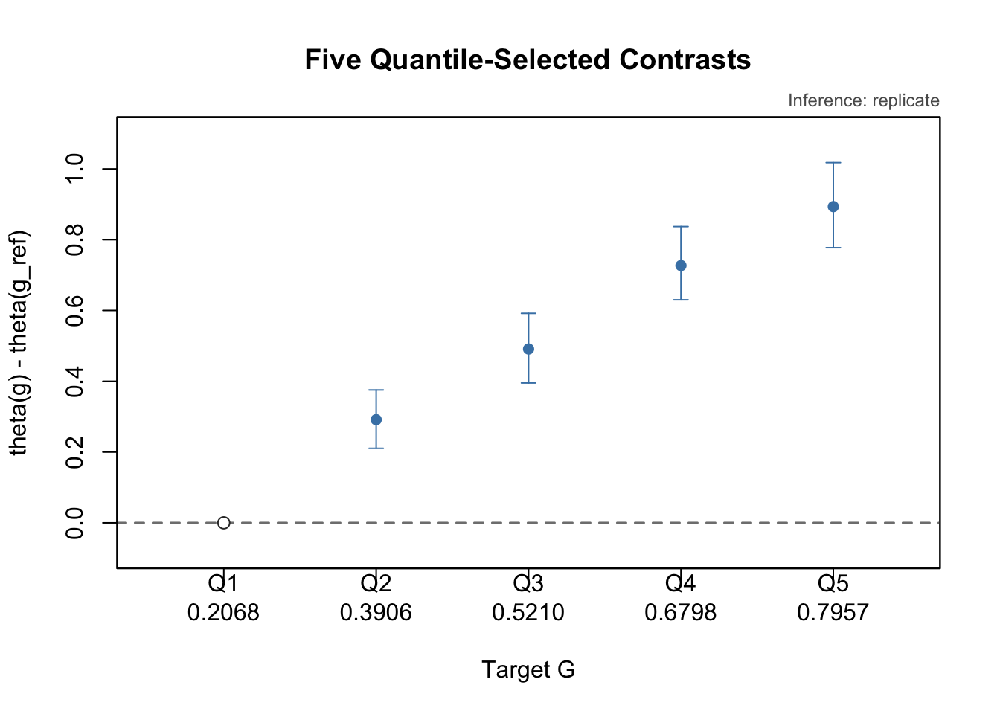
plot(fdid_results_flex_curve, type = "contrast",
ref.g = 0.5,
target.g = c(0.2, 0.35, 0.65, 0.8),
main = "Fixed-Reference Contrast Coefficients")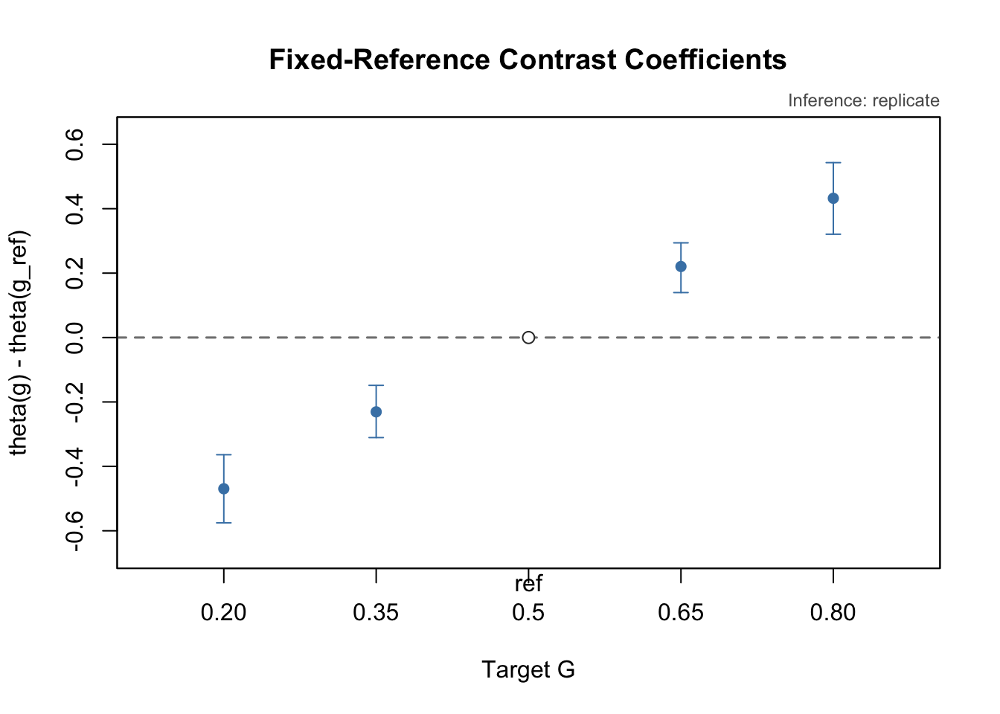
fdid_contrast(fdid_results_flex_curve, g0 = 0.5, g1 = 0.8)6.5 Comparison of methods
By default, the comparison plot uses a vertical layout (estimates stacked top to bottom). Set vertical = FALSE for a horizontal layout.
plot(fdid_list(fdid_results_did, fdid_results_ols1, fdid_results_ols2,
fdid_results_ebal, fdid_results_aipw), vertical = FALSE
)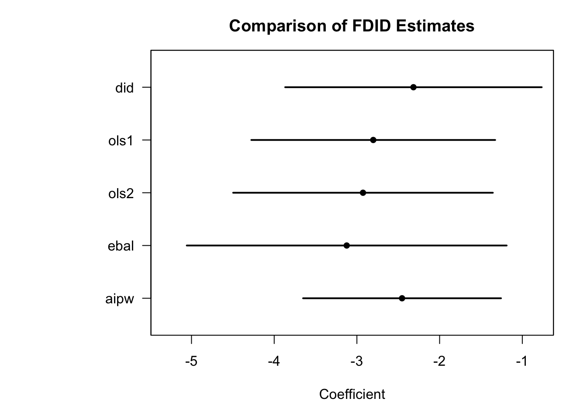
Common options:
xlabandmainchange labels/titles.ylimsets the range of the estimates axis.
plot(fdid_list(fdid_results_did, fdid_results_ols1, fdid_results_ols2,
fdid_results_ebal, fdid_results_aipw),
ylim = c(-5,5)
)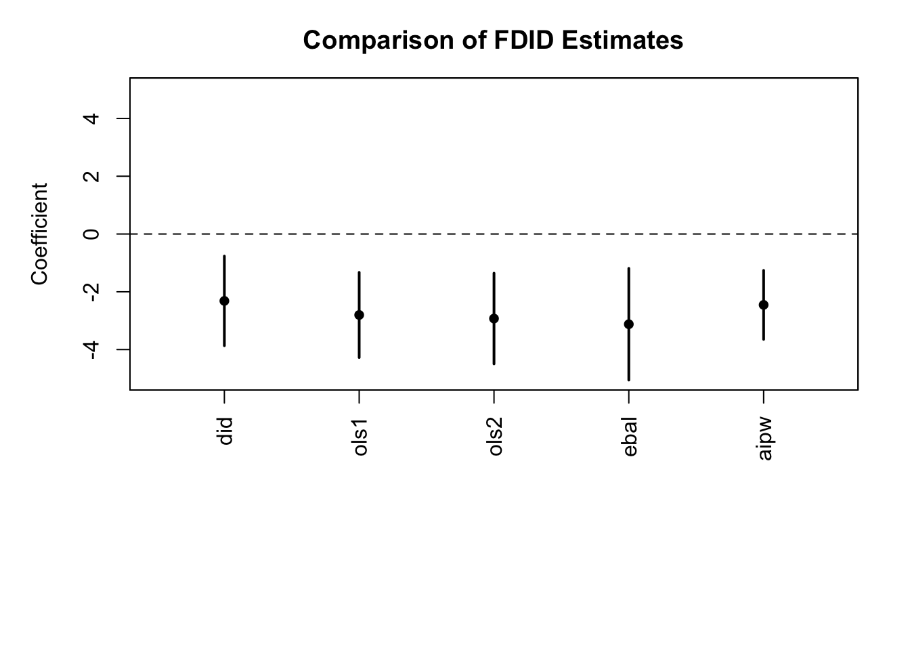
plot(fdid_list(fdid_results_did, fdid_results_ols1,
fdid_results_ols2, fdid_results_ebal, fdid_results_aipw),
xlab = 'Static Estimates',
main = 'Comparing Different Methods', vertical = FALSE,
ylim = c(-10,10)
)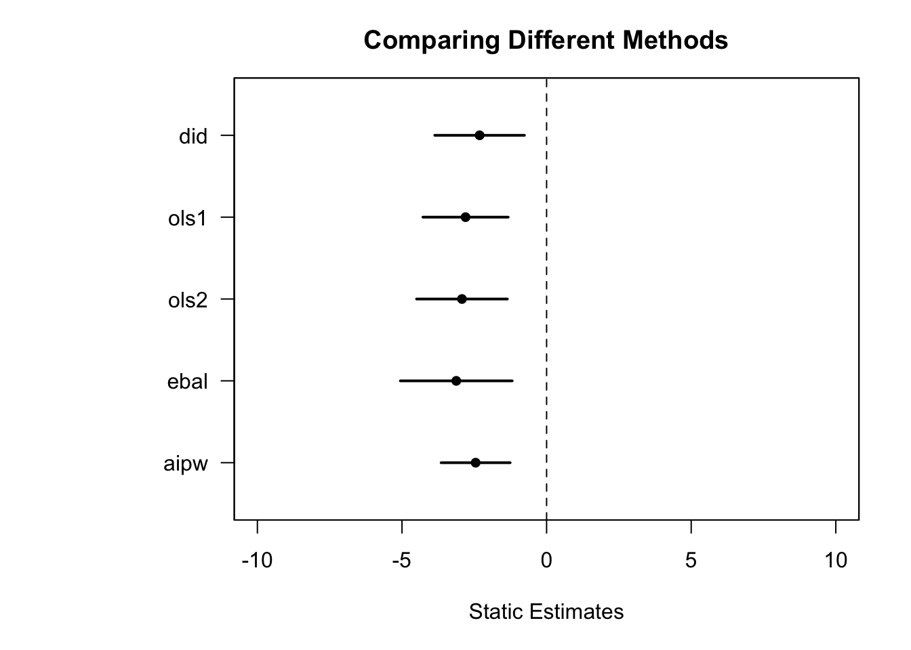
The labels reflect method, and add vartype when it is not the default "robust". Other settings (e.g., target.pop) are not currently shown in the labels.